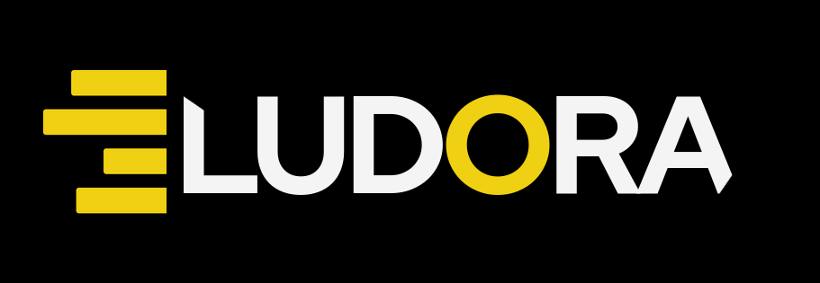
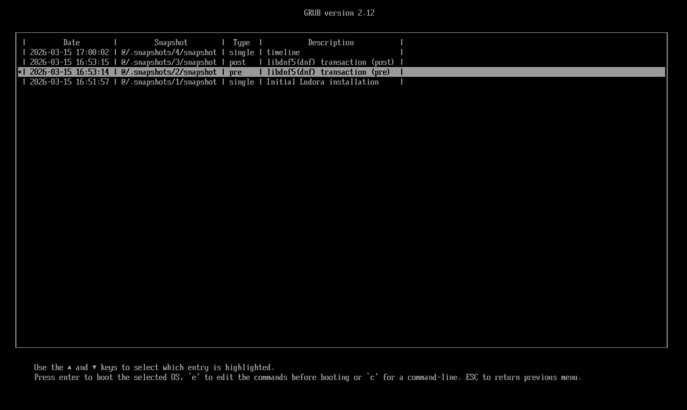
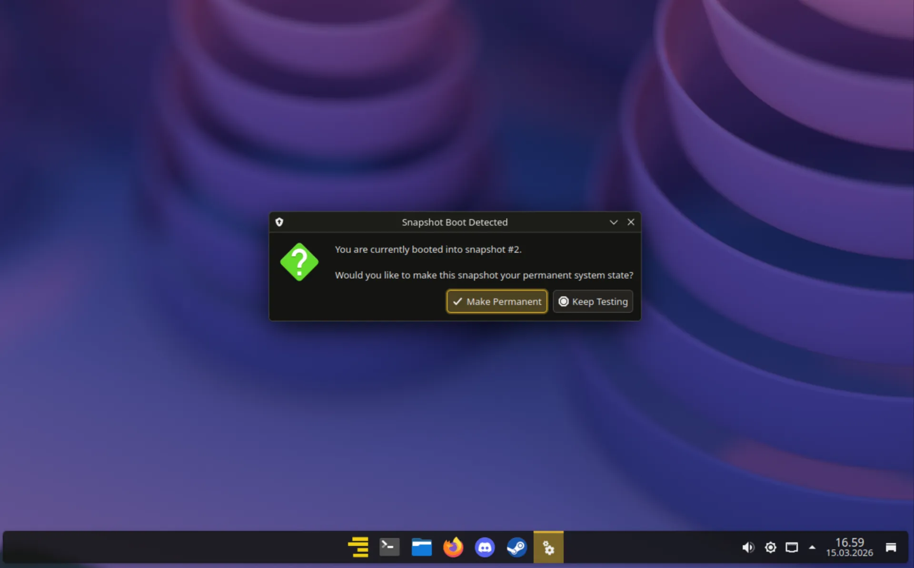
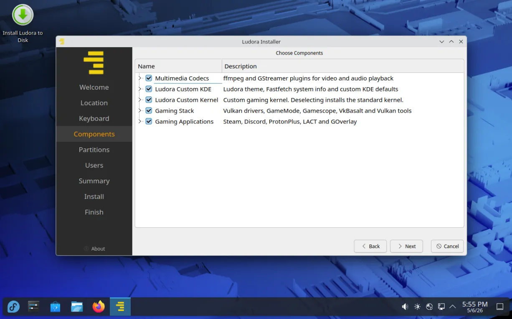
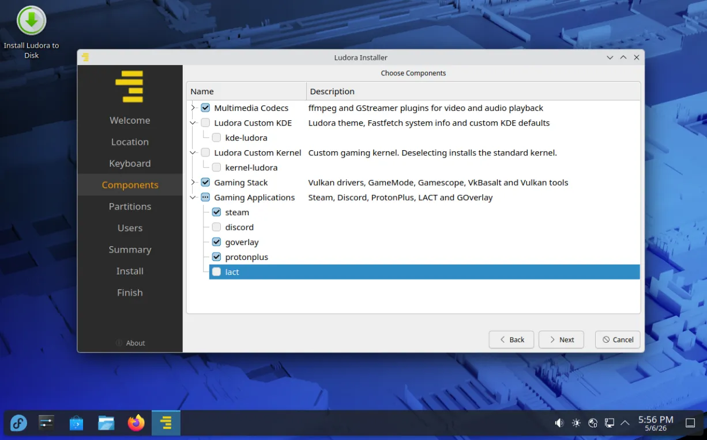
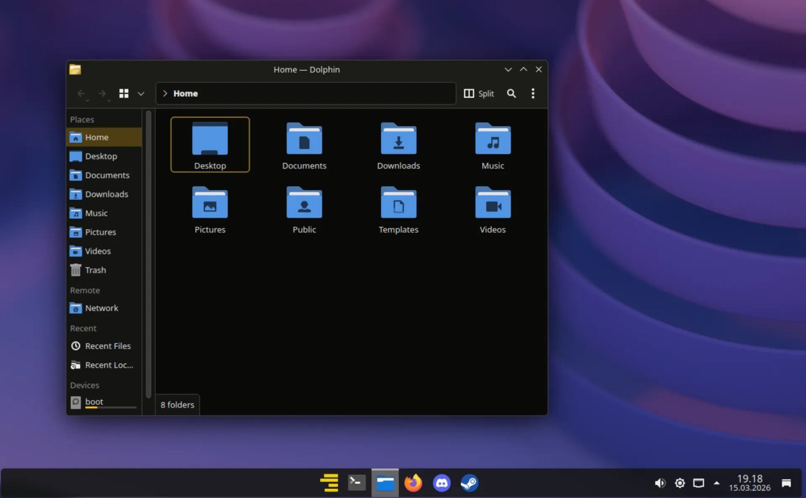

Ludora: Gaming-ready Fedora with openSUSE-style bootable snapshots
A Fedora KDE spin where bootable Btrfs snapshots are set up for you at install time. Keep the full gaming setup, or untick it for a clean KDE desktop. If an update breaks something, boot a snapshot from GRUB and restore it with one click. See how it works →
System Recovery
Boot into any snapshot. Restore with one click.
Ludora creates bootable Btrfs snapshots before and after every DNF operation, so every sudo dnf upgrade is covered.
If something breaks, reboot, pick a snapshot in GRUB, and restore your system to a working state.

1. Select a snapshot in GRUB
All snapshots appear in your boot menu. Pick any earlier state of your system.

2. One-click restore
A popup asks if you want to restore from this snapshot. Click yes, reboot, and you're back to a working system.
Automatic snapshots
Snapshots are created before and after DNF package operations, plus hourly, daily and monthly timeline snapshots. Old ones are cleaned up automatically.
Bootable from GRUB
openSUSE-style integration with GRUB means every snapshot is bootable. No live USB needed for recovery.
Hard to break
Try new kernels, drivers or updates without worrying. You're always one reboot away from a working system.
Why this matters
Setting up bootable Btrfs snapshots on Fedora by hand is surprisingly complicated. The default Anaconda installer doesn't support the subvolume layout needed, so it takes manual post-install work before you can even install and configure snapper, grub-btrfs and the DNF plugin.
Ludora does all of this during installation with a custom Calamares configuration. You get openSUSE-style snapshots on Fedora's stable base, with no manual setup.
Modular Installer
Choose what gets installed.
All five component groups are selected by default for a full gaming setup. Deselect any of them during installation, and Ludora leaves them out.

Full gaming setup. All five components selected, which is the default. Install, and you're ready to game.

Pick and choose. Deselect the components you don't want. Each group is independent.
-
Multimedia Codecson by default
ffmpeg and GStreamer plugins for video and audio playback
-
Ludora Custom KDEon by default
Ludora theme, Fastfetch system info, and custom KDE defaults
-
Ludora Custom Kernelon by default
Kernel with the BORE scheduler and CachyOS patches. Deselect it to use the standard Fedora kernel.
-
Gaming Stackon by default
Vulkan drivers, GameMode, Gamescope and VkBasalt
-
Gaming Applicationson by default
Steam, Discord, ProtonPlus, LACT and GOverlay
Not a gamer?
Deselect the Gaming Stack and Gaming Applications during installation, and you get a clean Fedora 44 KDE desktop with bootable snapshots and multimedia codecs. No Steam, no gaming apps, just a stable base.
Features
What's included.
The full gaming setup is installed by default, and every part of it is optional. Underneath, it's regular Fedora.
Custom Kernel with BORE
The BORE scheduler and CachyOS patches, aimed at keeping the desktop and games responsive under load. Deselect it in the installer to use the standard Fedora kernel.
Bootable Btrfs Snapshots
openSUSE-style snapshots before and after every DNF operation. Boot into any earlier state directly from GRUB, then restore it from a popup.
Gaming Ready Out of the Box
Steam, Proton-GE, MangoHud and full codec support pre-installed. AMD and Intel graphics work right away. For NVIDIA, Ludora Welcome walks you through the driver install.
Ludora Welcome
Opens on first boot with the steps worth doing after an install: updating the system, installing NVIDIA drivers, and setting GE-Proton as the default in Steam. You can reopen it from the app menu.
Refined KDE Desktop
Custom Ludora theme and KDE defaults on top of Plasma. Deselect it in the installer if you prefer stock Fedora KDE.
Fedora Underneath
Built on Fedora 44, with Fedora's packages, SELinux and six-month release cycle. A new Ludora follows each Fedora release.
Public COPR Repository
All custom packages are built in a public COPR repository, with logs for every build. It's enabled out of the box, so updates arrive with regular dnf upgrade.
Modular Installation
Five independent component groups. Install the full gaming setup or a clean KDE desktop with snapshots. You decide at install time.
Screenshot
The default desktop.
What you get after a full install with all components selected.

About
What this is.
A few honest facts about the project.
Ludora 44.3 is the current release. Ludora 45 will follow very soon after Fedora 45 is released. Ludora is a personal project that I build in my spare time, not a commercial product.
Anyone comfortable with Fedora or Linux in general who wants bootable snapshots without setting them up by hand. That includes gamers who want a ready-to-go gaming system, and non-gamers who just want a stable KDE desktop with a way back when something goes wrong.
Ludo is Latin for "I am playing." The second half nods to Fedora, the distribution it's built on.
Help
Questions.
The things people usually ask.
When is Ludora 45 coming?
Very soon after Fedora 45 is released. The packages are already being built and tested for Fedora 45.
Can I upgrade from Ludora 44 to 45?
Yes. The Ludora COPR repository builds for both, so the normal Fedora system upgrade works without extra steps.
Take a snapshot first with sudo snapper create -d "pre-F45", so you can go back from the GRUB snapshot menu if needed.
Should I update with Discover or dnf?
Use sudo dnf upgrade in a terminal for system updates. Snapshots are created around dnf operations, and Discover doesn't trigger them.
Found a bug or have a question?
Please open an issue on GitHub Issues, or ask in GitHub Discussions.
Get started
Download and install.
The ISO is hosted on SourceForge. Write it to a USB stick with Fedora Media Writer, Etcher, or Rufus in DD mode, then boot and install.